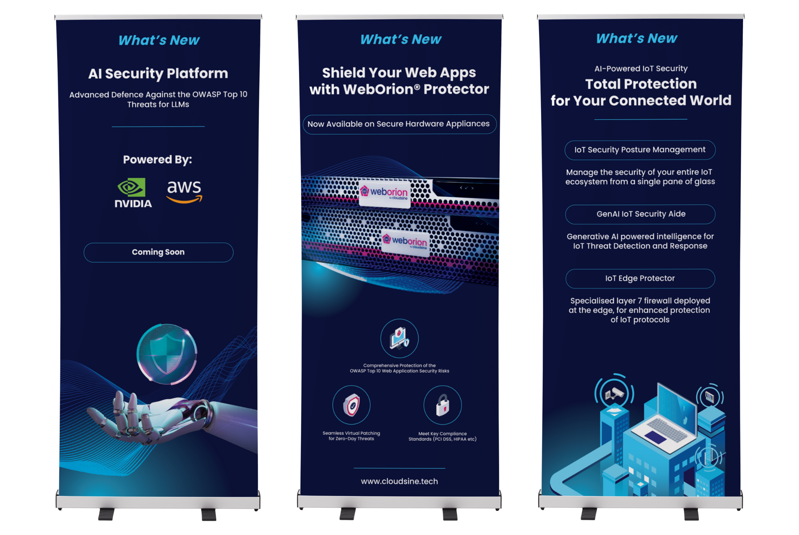
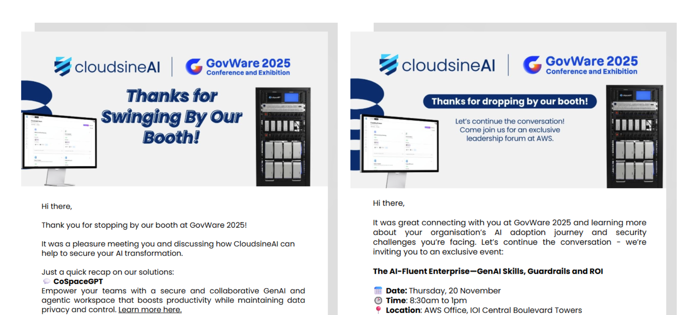

At CloudsineAI, events were a core demand generation channel to engage enterprise security buyers and generate pipeline. I led the planning and execution of CloudsineAI's participation in conferences, focusing on lead quality and conversion rather than just attendance. The GovWare conference in Singapore is an example of a conference we participated in.
For every event we participated in, I was in charge of:
Below are some examples of my work:

